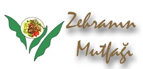

GÜNÜN YEMEKLERİ
TARHANA ÇORBASI
Hazırlanışı : Tencereye tereyağını koyup eritiyoruz. Tarhanayı ve salçayı ilave ediyoruz.
Devamı

SOSLU TAVUK
Hazırlanışı: Tavukları una bulayıp fazlasını temizliyoruz. Zeytinyağı dökülmüş tavada her iki tarafını pişiriyoruz.
Devamı
SEBZELİ PİRİNÇ PİLAVI
Hazırlanışı: Bu pilav hem göze hem mideye hitap eden yemekler katagorisine giriyor. Uygulamanızı tavsiye ederim.
Devamı
ELMASİYE
Hazırlanışı: Ocağın üzerinde ısıtılmış tencerenin içine 5 bardak kaynamış suyu koyun. Üzerine 1 bardak şeker ekleyin.
Devamı
© Mutfak